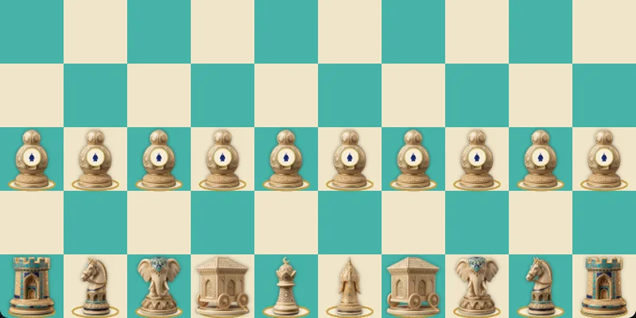

Complete chess, 10 × 10
Shatranj at-tamma: the first known attempt to enlarge the board and add a piece, the dabbaba, a siege engine.

The manuscripts call the game at-tamma, “the complete”, and Murray calls it decimal chess. The board is 10 × 10, and two dabbabas and two pawns a side are added to the usual army. The dabbaba is the siege shed under which men approached a wall; the Romans called it a vinea, medieval Europe a “sow”. The piece was carved “square, the head furrowed, of the same height as the ferz”; Bland, from the London manuscript, describes it as “a six-sided inkstand with a knob on top”.
The rules in the manuscripts
The dabbabas stand between the alfil and the shah and between the alfil and the ferz. They move like the shah, one square in any direction, “only they both take and can be taken”; their value lies between the rukh and the horse. The pawns are set not on the second rank but on the third: “the pieces are arranged, then a line is left, and the pawns are set up”.
Two rules in the text are unusual. A pawn “cannot queen while the ferz is on the board”; we read it literally: while a ferz lives, no pawn steps onto the last rank. And “when one of the two shahs has won his opponent’s square, it is half the qamar”, half the stake: a shah that reaches the starting square of the enemy shah wins half the game. We count it as a win, since without stakes the rule would otherwise mean nothing. There is no bare king here: “the shah must play when he has no pieces left”.
Camels instead of dabbabas
Enlarging the board was tried more than once. Al-Mas’udi tells of al-Khalil ibn Ahmad (718–791), the famous philologist, who “found no pleasure in chess until he had increased the pieces by a camel”; people played with it for a while, then put it aside. Ferdowsi in the Shahnameh, telling how chess was invented, also sets camels on a large board, between the horse and the alfil, leaping over one square in a straight line. So the camel of Tamerlane chess is an old acquaintance.
Murray doubted that this board descended from the ancient Indian “ten-square” board and took decimal chess for an independent Arab invention, the first in a long line of attempts to “improve” chess by adding pieces. The game was forgotten; but from here a straight road leads to al-Amuli’s citadel chess and to Timur’s great chess.